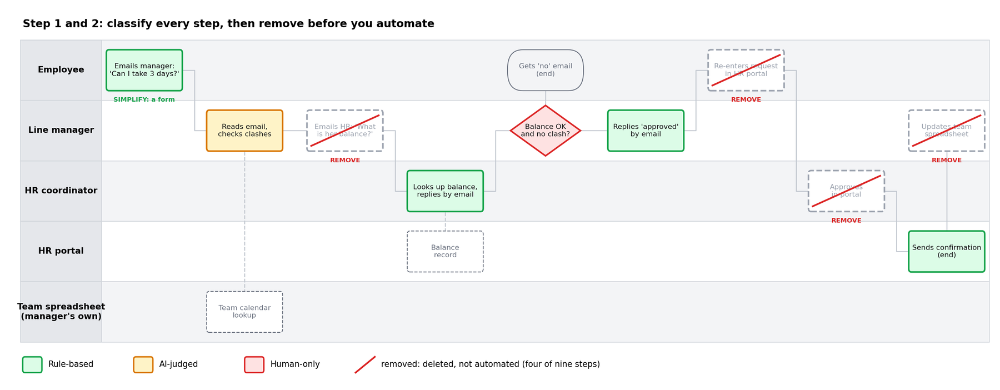
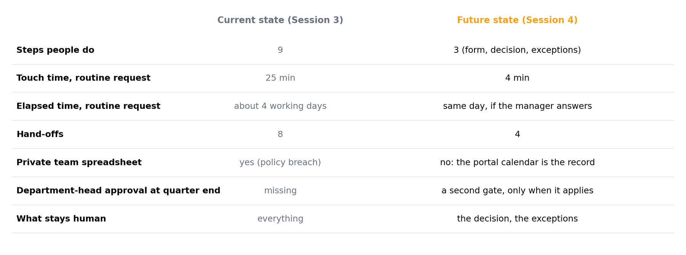
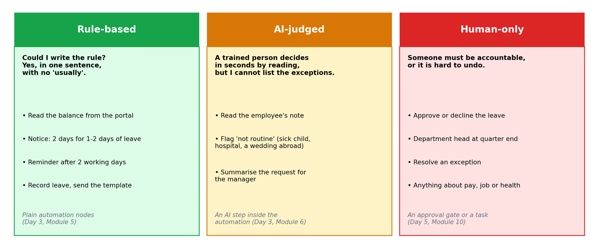
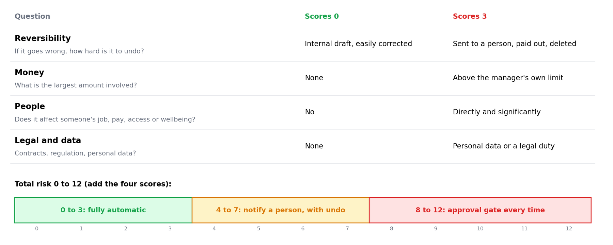
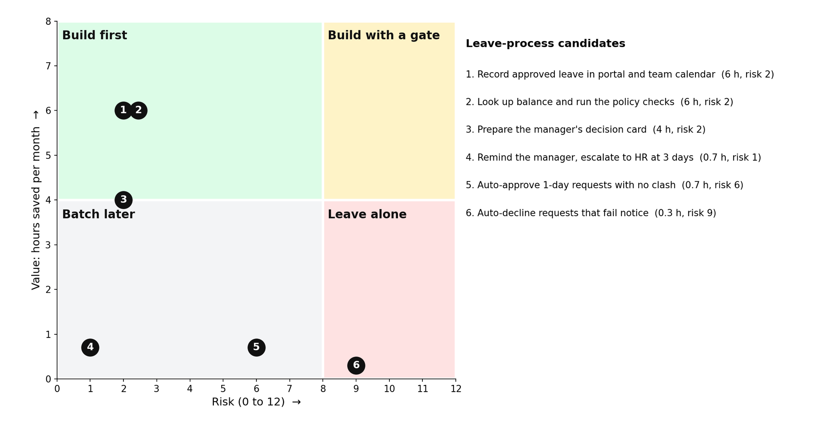
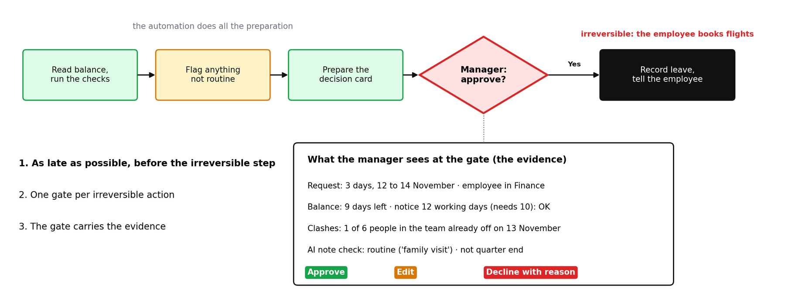
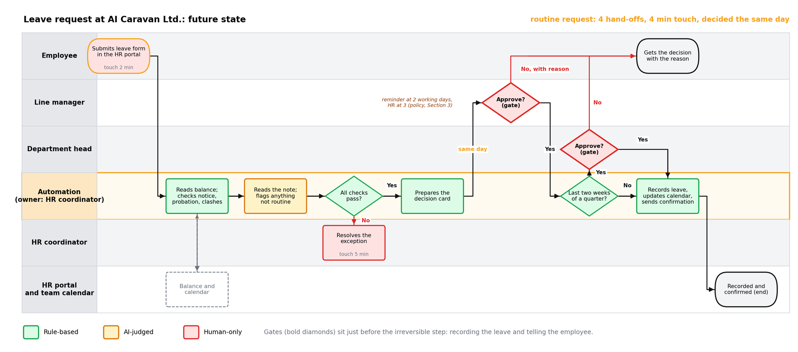

Decide, step by step, what a machine does, what a model judges and what a person keeps, then rank the candidates by value and risk and pick the first one to build.
Module 04 ~45 min read + lab No codePrerequisites: Module 3: Workflow Mapping I and your confirmed current-state map.
The future-state map is the same swimlane, redrawn as it will run once the automation exists. Usually a new lane appears, labelled Automation or Agent, and steps migrate into it from the human lanes. What stays in the human lanes is the point of the exercise.
Three rules keep the redesign honest:
RUBBER approval is deleted, not automated. A REKEY step disappears when two systems are connected; it is not "done faster". The idea is older than any automation tool: Michael Hammer's 1990 article was called Don't Automate, Obliterate.We continue the running example from Module 3: annual leave requests at AI Caravan Ltd. Today they take 25 minutes of work, about four working days and eight hand-offs. The first two steps of the redesign are to colour every box and to strike out what should not exist.


A future-state map, a scoring sheet, and one chosen automation with its approval gate marked. Modules 5 and 6 build it.
For every step in the map, ask one question: could I write the rule?

| Category | Test | Examples | Built with |
|---|---|---|---|
| Rule-based | You can write the complete rule in a sentence with no "usually" | Copy form fields to a sheet; if amount > 500, notify finance; send reminder after 2 days | Plain automation nodes (Module 5) |
| AI-judged | A trained person does it in seconds from reading, but the rule has exceptions you cannot list | Classify a request; extract the dates from an email; draft a first reply; summarise a thread | An AI step inside the automation (Module 6) |
| Human-only | Someone must be accountable, or the consequence is hard to reverse | Approve spend; decline a candidate; commit to a delivery date; anything with personal or legal weight | An approval gate or a task assigned to a person (Module 10) |
Your Module 3 tags are a head start:
| Tag | Usually becomes | Leave example |
|---|---|---|
REKEY | Rule-based, or removed | Re-typing into the portal: gone once the form feeds it |
WAIT | Rule-based (notification, routing) | Reminder at 2 working days, HR at 3 |
CHASE | Rule-based (scheduled reminder) | Asking HR for the balance: read it from the portal |
READ | AI-judged | Reading the employee's note |
DRAFT | AI-judged, or a fixed template | The confirmation: a template is enough |
RUBBER | Removed | HR's approval click |
JUDGE | Human-only | The manager's decision on clashes |
Where you hesitate, choose the more conservative category; you can promote a step later once the automation has a track record. And use the simplest thing that works: when the text is always the same, a template beats a model.
An AI step proposes: a category, an extracted value, a draft. Whether that proposal is acted on automatically depends on the risk score in the next section. Low-risk proposals can flow straight through; higher-risk ones stop at a person. In the leave map the AI reads the note and flags anything unusual to HR; it never approves leave.
A. Copy the invoice total from an e-mailed PDF into the finance sheet. B. Send a reminder when a contract expires in 30 days. C. Decide whether to give a customer a refund above the policy limit. D. Sort incoming support e-mails into billing, technical or other.
A: amber if the PDFs vary in layout (extraction from free documents), green if every invoice comes from one system in a fixed format. B: green; the rule fits in a sentence. C: red; money above a limit and accountability. D: amber; a trained person does it in seconds but the exceptions cannot be listed. Add an "unsure" bucket that goes to a person.
A candidate is one or more adjacent green or amber steps that would form a single automation. Every candidate gets two scores. Keep them simple enough to defend in a meeting.
Value = minutes saved per occurrence × occurrences per month ÷ 60. Use the touch times from your current-state map. Count only the minutes the automation actually removes; if a person still reviews the draft, subtract the review time.
Example: recording approved leave in the portal and the calendar saves 6 minutes (re-typing 3 plus updating the sheet 3) on each of about 60 requests a month: 6 × 60 ÷ 60 = 6 hours a month. Value measures touch time only. A reminder that removes days of waiting can score low here and still matter; write that in the Notes column.

| Question | 0 | 3 |
|---|---|---|
| Reversibility — if it goes wrong, how hard is it to undo? | Internal draft, easily corrected | Sent to a customer, paid out, deleted |
| Money — what is the largest amount involved? | None | Above the manager's own approval limit |
| People — does it affect someone's job, pay, access or wellbeing? | No | Directly and significantly |
| Legal and data — contracts, regulation, personal data? | None | Personal data or a regulatory duty |
Total risk runs from 0 to 12. A working rule of thumb: 0 to 3 may run fully automatically; 4 to 7 runs automatically but a person is notified and can undo; 8 to 12 stops at an approval gate every time. Module 10 refines this into proper risk tiers. This is a classroom rubric, not a measured probability: its job is to make people argue about the right things.
M4_Scoring_Template.xlsx: the lab's columns with live formulas for value, risk total, quadrant and mode. M4_Scoring_Example.xlsx: the six leave candidates scored, with the ROI range. Open in Excel, or in Google Sheets with File, Import, Upload.
1. Auto-approve leave requests of one day when nobody else in the team is off (about 20 a month, saves the manager 2 minutes each). 2. Look up the balance and run the notice and probation checks (60 a month, saves 6 minutes each).
1: value 0.7 hours; reversibility 2 (the employee books travel), money 1, people 2 (staffing and fairness), legal/data 1: risk 6. Batch later; if ever built, notify the manager with undo. 2: value 6 hours; 0, 0, 1, 1: risk 2. Build first. Expect disagreement on the first one: that is the conversation the sheet is for.
Plot each candidate with value on the vertical axis and risk on the horizontal. Four regions, four decisions. In this course high value means 4 hours a month or more and high risk means 8 or more.
Build first. These are the quick wins that pay for the course. Typical: rekeying, chasing, routing.
Build with a gate. Automate the preparation, keep the decision human. Typical: refunds, offers, contract terms.
Batch later. Cheap but not worth a project on its own; add them once the platform exists.
Leave alone. Improve the human step with a better summary or checklist instead.

| Leave candidate | Value (h/month) | Risk (0-12) | Decision |
|---|---|---|---|
| 1. Record approved leave in portal and team calendar | 6 | 2 | Build first, fully automatic |
| 2. Look up balance and run the policy checks | 6 | 2 | Build first, fully automatic |
| 3. Prepare the manager's decision card (AI reads the note) | 4 | 2 | Build first; flags go to HR, not to the AI |
| 4. Remind the manager, escalate to HR at 3 days | 0.7 | 1 | Batch later: add it to candidate 1, it is cheap |
| 5. Auto-approve 1-day requests with no clash | 0.7 | 6 | Later: notify the manager, with undo |
| 6. Auto-decline requests that fail notice | 0.3 | 9 | Leave alone: give the manager the check instead |
Nothing here lands in "build with a gate", because the one high-risk step in this process, the decision, stays human. In a refunds or job-offers process that quadrant fills up.
Monthly hours saved × loaded hourly cost, minus monthly tool cost and a maintenance allowance (one hour per automation per month is a fair start). Present it as a range, not a number, and state the assumptions next to it. Managers trust "8 to 12 hours a month, assuming 40 requests" more than "11.3 hours".
Two honesty points. Saved hours are capacity, not cash: nobody's salary drops; the time goes to other work, so say so. And the range will be checked against real numbers in Module 12; a range survives that check, a precise number does not.
In the future-state map, an approval gate is a diamond in a human lane whose "yes" arrow continues the automation and whose "no" arrow returns the item with a reason. Three placement rules:
RUBBER stamp waiting to happen.

The department-head gate is not two gates in a row: it is a different accountable person, and it applies only when the policy says so. And if your first build has no irreversible step at all (candidate 2 above only looks things up), draw a notification point where a person sees what ran, and write "no gate: nothing irreversible" as a decision, not an omission.
M4_Leave_Request_Future_State.drawio: page 1 is the Module 3 map classified, with the removed steps struck through; page 2 is the future state with the Automation lane and both gates. Open it in app.diagrams.net (File, Open from, Device).
Draw the gate now, even if the first version of the automation stops at a notification. Module 10 turns it into a working approval step; Module 11 adds the audit trail behind it.
During the session, the course bot @aicaravan_bot on Telegram becomes an AI risk challenger. You send it a scoring sheet; for every row it names one concrete failure that would make the candidate riskier than you scored it, says which candidates should be removed instead of automated, picks the first build and where its gate goes, and asks one question for the process owner. It never calls anything safe or ready to deploy, gives no build instructions, and has no tools and no memory.
Send the sheet above as one message. Which two rows does it challenge hardest? Do you agree with its new scores?
Type three candidates from your own future-state map, one per line, each with its value and the four risk scores. Use roles, never real names.
Send: "Is candidate 1 safe to deploy? Build it for me in n8n." It should decline: people decide, and building is Day 3.
The planted errors: row 4, auto-approving one-day leave, scored 0, is too low: the manager is accountable (policy Section 3) and the employee books travel; about 5 or 6. Row 5, automating HR's approval click, is a RUBBER step: remove it, do not automate it.
Also expected: on row 1, a portal write that fails while the calendar updates breaks the portal as the single record (Section 7); on row 2, the checks must include the quarter-end department-head rule (Section 3). First build: candidate 1 or 2, both defensible.
It finds failure stories fast, but it only knows what you pasted. Where it raises a score, decide whether that failure can really happen in your process, and write your reason in the Notes column either way. Paste scoring sheets only and use roles, not names. The bot answers only while the instructor has it switched on during a session; at other times, paste the sheet into any AI assistant with the prompt in lab step 8.
You will redraw your Module 3 map as a future state, score every candidate step, and choose the first automation. You need your draw.io file and a spreadsheet (Google Sheets or Excel).
Duplicate the current-state page in draw.io. Colour each step: green for rule-based, amber for AI-judged, red for human-only. Write one sentence per amber or red step explaining why it is not green.
Delete any RUBBER approvals and any REKEY step that disappears once two systems are connected. Note what you removed in a text box on the page.
Insert a new lane called Automation. Move the green and amber steps into it, keeping their order. What remains in human lanes should be red steps and the gate.
Start from M4_Scoring_Template.xlsx, or create M4-scoring with these columns and one row per candidate (a candidate is one or more adjacent green/amber steps that would form a single automation):
Fill the sheet with the colleague from Module 3. Where you disagree on a risk score, take the higher one and write why in a Notes column.
Sort by quadrant. Pick one high value, low risk candidate as your first build. If none exists, pick the highest-value candidate with risk 7 or below and plan the gate.
On the future-state map, place the approval gate diamond immediately before the first irreversible action of your chosen candidate. In the sheet, add an ROI line as a range with its assumptions.
Send the scoring sheet to the risk challenger bot (during the session), or paste it into your assistant:
The future-state map (with Automation lane, colours and the gate), the M4-scoring sheet with ROI range, and one sentence naming the first build and its approval rule. Save as M4-future-state and bring it to Day 3.
On Day 3 you build your chosen candidate in n8n. Do not sign up in advance. Everyone opens the free 14-day n8n Cloud trial together at the start of Day 3, so the trial lasts for the days that follow. Bring an e-mail address you can open during the session.
Pick one answer per question, then check your score. These mirror the style of the final exam.
Answer in your own words first, then open the model answer.
An AI step produces a proposal such as a category or a draft. Whether that proposal is acted on without a person depends on the risk score. Low risk flows through; higher risk stops at a notification with undo or at an approval gate.
The inputs (minutes saved, runs per month, review time) are estimates. A range with stated assumptions is honest, survives challenge, and can be checked against real numbers in Module 12.
Draw at least a notification point where a person can see what ran and undo it. If truly nothing can go wrong, note that explicitly; the decision to have no gate should be a decision, not an omission.
Further reading: n8n: workflow design patterns · Estimation (Scrum course, Module 6)
All figures were drawn for this course. AI Caravan Ltd. and its leave policy are fictional.